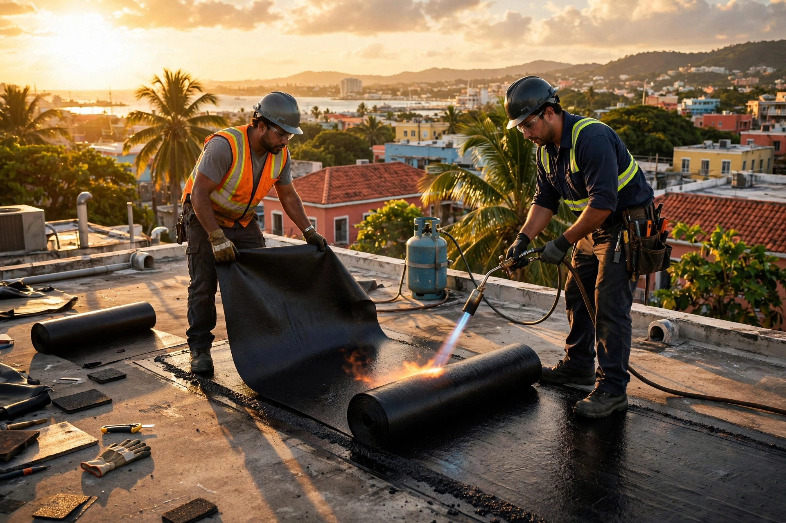
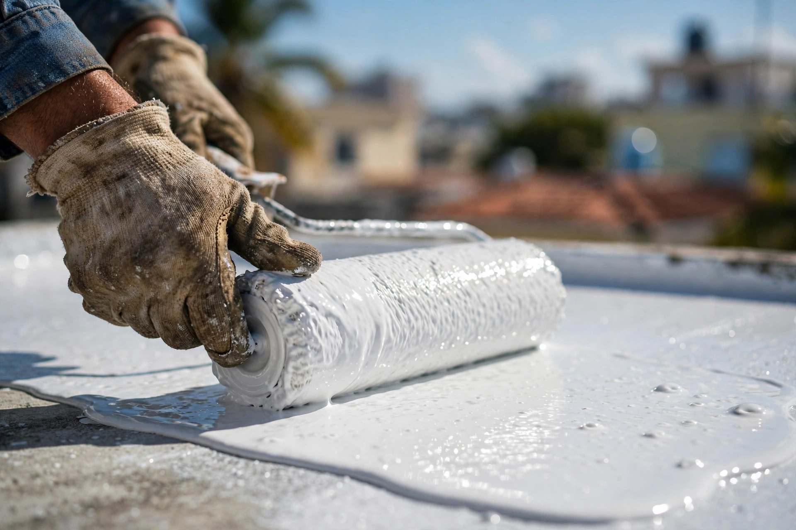
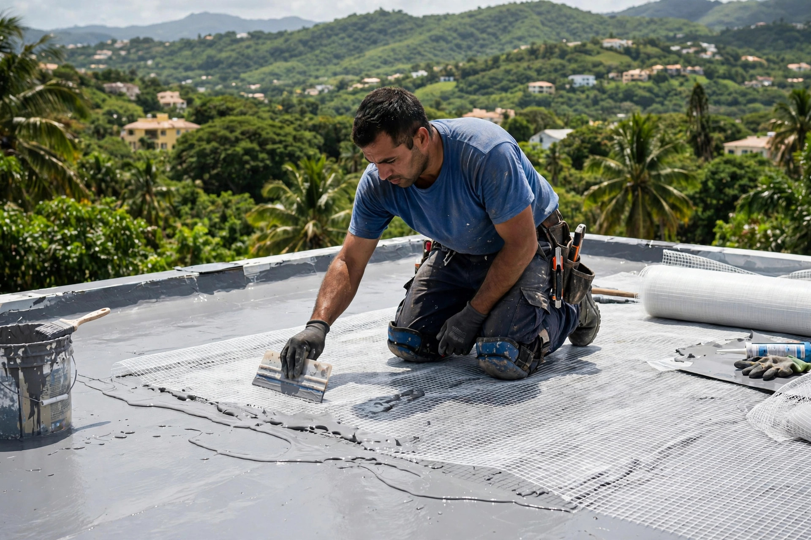
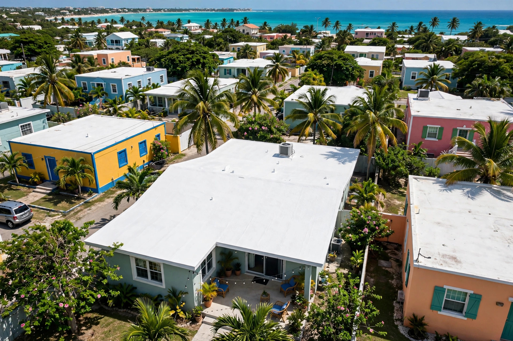
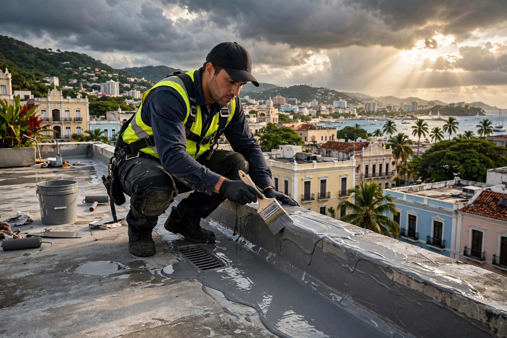

20+ años de oficio
Más de dos décadas sellando techos en Puerto Rico. Lo hemos visto todo y lo sabemos resolver.
San Juan · Puerto Rico
Más de 20 años de experiencia con membranas asfálticas, elastoméricas, uretano, fiberglass y sistemas ecoamigables. El sistema correcto para tu necesidad y tu presupuesto.


Por qué Five Star
Más de dos décadas sellando techos en Puerto Rico. Lo hemos visto todo y lo sabemos resolver.
El sistema se elige según tu techo, tu necesidad y tu presupuesto. Nada de una sola receta para todo.
Sistemas ecoamigables que protegen tu techo y cuidan el ambiente. Pregunta por ellos.
Te explicamos qué necesita tu techo antes de empezar. Sin letras pequeñas, sin sorpresas.
Nuestro trabajo



Servicios
Impermeabilización probada para techos planos. Resistencia y durabilidad comprobada.
Recubrimientos flexibles que se mueven con tu techo y sellan cada grieta.
Sellado de alta resistencia para bordes, desagües y puntos críticos del techo.
Refuerzo con malla de fiberglass para techos que necesitan una capa extra fuerte.
Alternativas verdes que protegen tu techo con menor impacto ambiental.
Más de 20 productos: escogemos el sistema según tu necesidad y tu presupuesto.
Nosotros
Somos Five Star Roofing, de Bo. Caimito Alto en San Juan. Llevamos más de 20 años dedicados a una sola cosa: sellar techos bien hechos en Puerto Rico.
Trabajamos membranas asfálticas, elastoméricas, uretano, sistemas en fiberglass y sistemas ecoamigables. Con más de 20 productos disponibles, no te vendemos lo único que tenemos: te recomendamos lo que tu techo realmente necesita.
Hablar por WhatsAppCómo trabajamos
Cuéntanos por WhatsApp qué le pasa a tu techo.
Visitamos, revisamos y detectamos el problema real.
Te proponemos el sistema ideal para tu necesidad y presupuesto.
Ejecutamos el trabajo limpio y te entregamos el techo protegido.
Preguntas frecuentes
Estamos en Bo. Caimito Alto, Carr. 842 Km. 4.5, San Juan, Puerto Rico.
Depende del estado de tu techo y tu presupuesto. Trabajamos membranas asfálticas, elastoméricas, uretano, fiberglass y sistemas ecoamigables: más de 20 productos para escoger el ideal.
Más de 20 años sellando techos en Puerto Rico.
Escríbenos por WhatsApp al 787-942-9627 o llena el formulario de contacto. Te respondemos por WhatsApp.
Sí. Estamos en San Juan y coordinamos proyectos en el área metropolitana y el resto de la isla.
Cotización gratis
Completa los 3 pasos y te abrimos WhatsApp con tu solicitud lista para enviar.
Esta página la creó ManuPro. Escríbenos hoy mismo y cotiza la website profesional de tu negocio.
Cotizar por WhatsApp